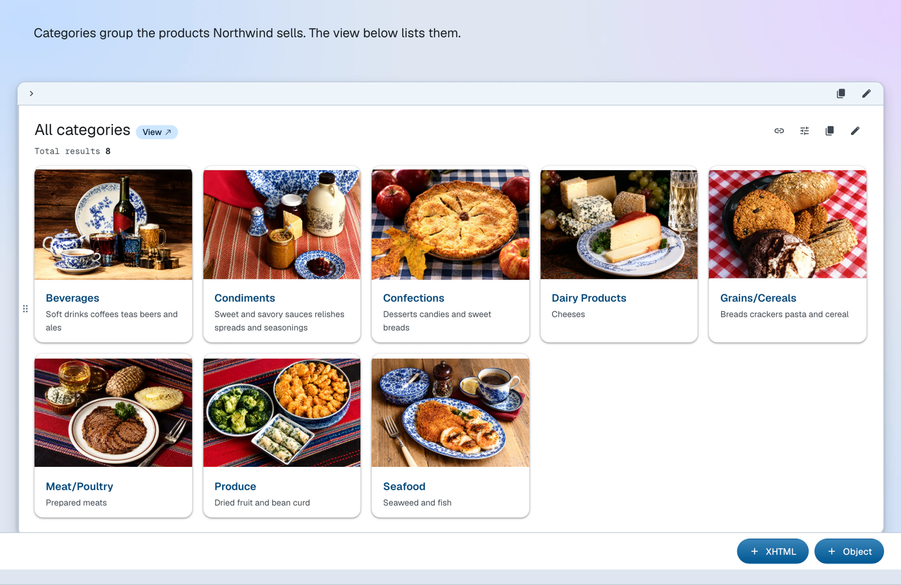

Create content
Learn how to create data-driven content

Each document (container or item) can have content, i.e. a list of blocks which is shown in the content layout mode. A block is one of two types:
- XHTML
- A fragment of XHTML that is embedded onto the page
- Object
- RDF URI resources that get transcluded into the page. Built-in resource examples:
- Linked Data resource
- Any URI that resolves to RDF data
- View
- A paginated result of a SPARQL
SELECTquery (a client-side counterpart of a container) - Chart
- A result of a SPARQL query rendered as a chart
XHTML content is stored in the document itself; object content is transcluded into the page at render time.
XHTML blocks
Add block
To create a new XHTML block, follow these steps:
- Make sure you are in the content layout mode
- At the bottom of the page, click the XHTML button
- Add content in the rich-text editor
- Click the Save button to save the block
After this, a new XHTML block should be appended to the page, replacing the form.
Edit block
To edit an XHTML block, click anywhere inside it and make changes in place. The changes are saved automatically when the focus leaves the block — there is no separate save button.
Remove block
To remove an XHTML block, follow these steps:
- Hover over the block — controls appear in its top-right corner
- Click to remove the block
To add a new XHTML block to the Northwind dashboard, execute the following command:
ldh add xhtml-block \
--uri "#overview-intro" \
--value '<div xmlns="http://www.w3.org/1999/xhtml"><p>The iconic sample database, reborn as an RDF Knowledge Graph.</p></div>' \
"$LDH_BASE"
--uri is resolved against the document URI, so #overview-intro names the block within it. Omit it and the block becomes a blank node.
Object blocks
Add block
To create a new object block, follow these steps:
- Make sure you are in the content layout mode
- At the bottom of the page, click the Object button
- Fill out values in the form that appears: Value takes the URI of the object resource
- Click the Save button to save the block
After this, a new object block should be appended to the page, replacing the form.
Edit block
To edit an object block, follow these steps:
- Move the mouse to the very top-right of the block element where an editing button should appear
- Make changes in the editing form: Value takes the URI of the object resource
- Click Save at the bottom of the form to save the block
Remove block
To remove an object block, follow these steps:
- Hover over the block — controls appear in its top-right corner
- Click to remove the block
To embed the Vice President of Sales on the dashboard — an object block whose value is a plain data resource — execute the following command:
ldh add object-block \
--uri "#top-manager" \
--value "${LDH_BASE}employees/2/#this" \
"$LDH_BASE"
A chart or a view is embedded the same way — its URI as the
--value, like the demo dashboard's #sales-trend chart.